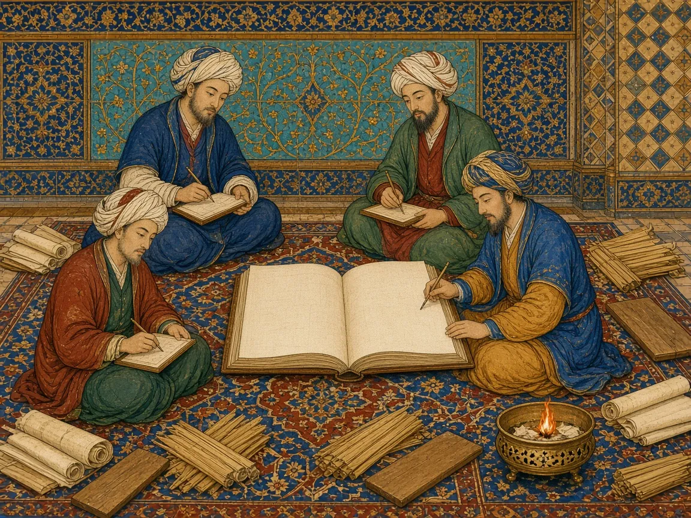
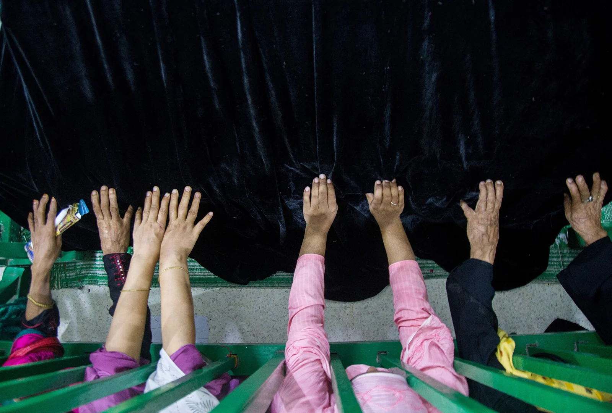
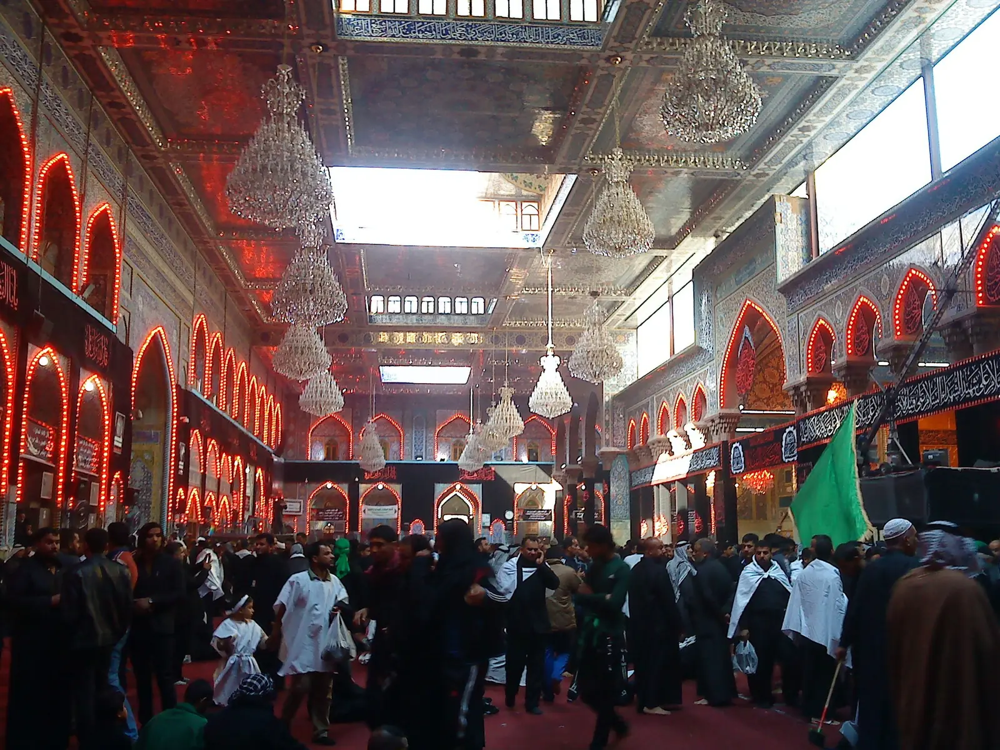
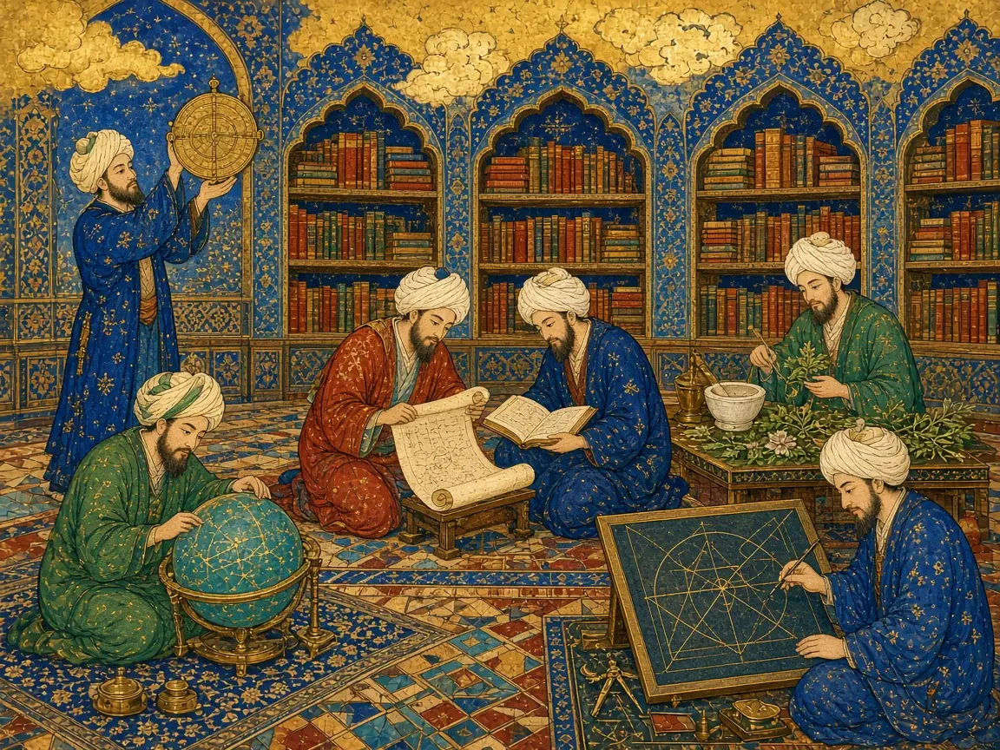
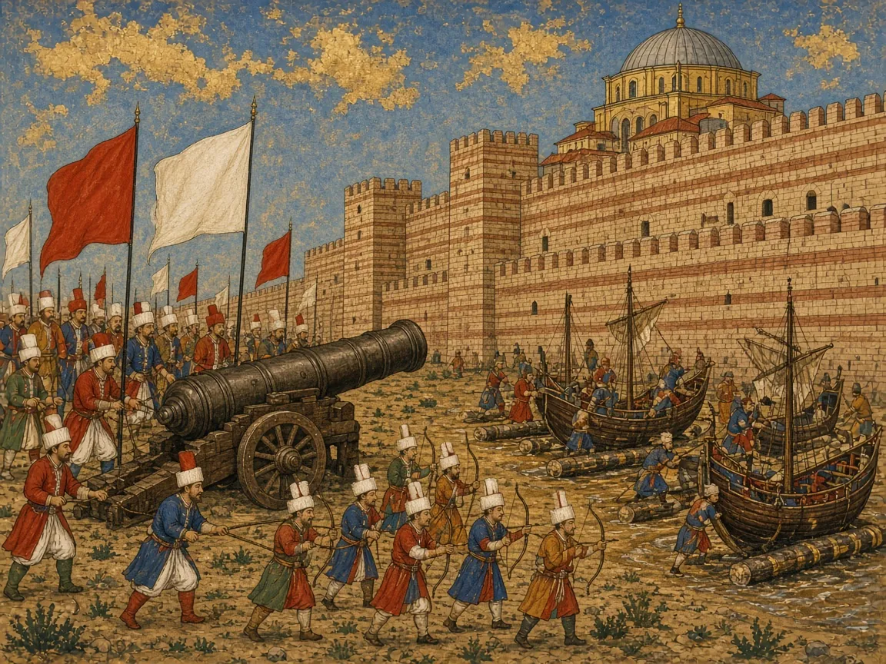
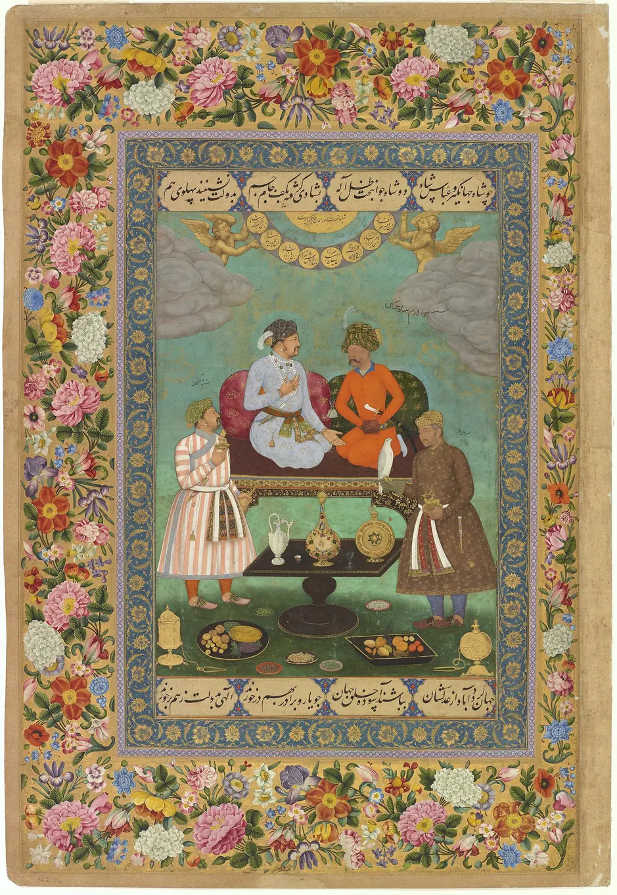
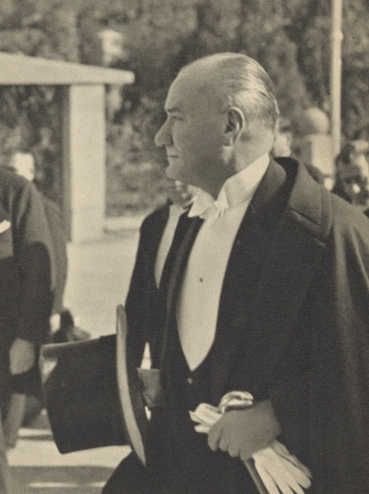

632 · p. 296
The Question of 632
The pressing issue at Muhammad’s death was who would succeed him as leader of the Islamic movement, and how it was settled affects Islam through today.
p. 296
What the community needed
A caliph: a “representative” or “successor” of Muhammad.
What the caliph would not be
A new prophet. He would receive no new revelations and not change Islam in major ways.
What he would do
Lead the community in its political and religious life and rule all Muslim lands.
Review Question 3 · p. 296
Ali or Abu Bakr?
Ali: the family candidate
Muhammad’s cousin, and his son-in-law by marriage to Fatima. Always enthusiastic for Islam. Claimed Muhammad had privately designated him. Many contested his fitness to rule.
Abu Bakr: the consensus choice
Muhammad’s father-in-law, an early believer, and a main military leader. Chosen by a majority of Muhammad’s most powerful followers.
Abu Bakr’s three advantages: a power base in the army; the need to stop tribes defecting from Islam; and his tie to Muhammad through his daughter A’isha, Muhammad’s favorite wife.
Review Question 3 · p. 296
The Seeds of Division
Shi‘as (Shiites)
“Followers” or “party” of Ali: Muhammad’s true successors descend from Ali.
Sunnis
“People of the tradition” (from sunna): the majority of Muslims.
The groups that grew from these seeds are the Shi‘as or Shi‘ites, ‘followers’ or ‘party’ (of Ali), and the Sunnis, the ‘people of the tradition,’ who formed the majority of Muslims.
p. 296
The first split in Islam was about leadership, not belief about God.
Chapter 12 Review Questions
Checkpoint: Review Question 3
Review Question 3 · Checkpoint
What caused the initial division between the Sunni and Shi‘a branches of Islam?
- Find the two anchor sentences on p. 296 (“A majority consensus…” and “The groups that grew…”)
- Name both candidates and say how each was related to Muhammad
- Give Abu Bakr’s three advantages and the meanings of the two names
- Review: Ali or Abu Bakr? and The Seeds of Division
634 and 644 · pp. 296–298
Passed Over Again, and Again
| Caliph | Rule | What happened |
|---|---|---|
| Abu Bakr | 632–634 | Squelched tribal defections; died after two years |
| Umar | 634–644 | Ali passed over a second time; Umar assassinated in 644 |
| Uthman | 644–656 | Ali passed over a third time; Uthman issued the Qur’an; assassinated by rebels in 656 |
- Ali’s supporters grew bitter: the caliphate seemed to move further and further from Muhammad’s family
- Meanwhile Islam kept spreading by Arab conquest and Muslim missionary work
ca. 650 · p. 298
Uthman Fixes the Text

- Muhammad had written none of the revelations down himself
- Followers had recorded them on parchment, palm leaves, and even pieces of wood
- Uthman gathered these and the existing collections, kept what he knew to be authentic, and destroyed the rest
- “The Qur’an emerged as we have it today”
656–661 · p. 298
Ali, the Last Rightly Guided Caliph
- 656: Uthman assassinated by rebels; Ali finally became caliph
- Ali is the last of the four Rightly Guided Caliphs, whom God directed to be faithful in ways later caliphs were not
- A leader of the Umayyad clan claimed the caliphate; the armies faced off in 661
- When Ali tried to compromise and avoid war, some of his own followers killed him (the Kharijites)
- War broke out; Sunnis triumphed and became the majority “in fact as well as in name”
680 · p. 301
Karbala, 680
- Ali’s sons Hassan and Husain were Muhammad’s grandsons; Shi‘as said this made them the rightful caliphs
- The textbook says Hassan gave up his claim due to illness and died soon after
- In 680 Husain’s small force met a Sunni army near Karbala, in present-day Iraq
- Cut off from water, the Shi‘as were destroyed; Husain’s severed head was carried on a lance
Every year on 10 Muharram · p. 301
Ashura: Mourning a Martyr
- Ashura, “the tenth” of Muharram: the day of Husain’s death, a Shi‘a day of mourning
- Husain’s death is viewed as martyrdom, a holy death for the true Islam
- In processions, some men lash themselves with chains until their blood flows
- On Ashura in 1979, Shi‘a radicals in Tehran stormed the U.S. embassy: see Iran’s revolution

p. 301–302
Imam and Mahdi

Imam (Sunni)
The leader of prayer in a mosque.
Imam (Shi‘a)
The religious-political leader in Ali’s line, with direct designation and supernatural knowledge of Islam.
Mahdi
“The one guided” by God: the hidden imam who will return to establish worldwide Shi‘a rule.
- Shi‘a religious leaders carry more authority than Sunni leaders
661–750 · p. 298
The Umayyads: An Arab Empire
- Sunni leadership belonged to the Umayyad clan for about a hundred years, ruling from Damascus
- Their empire took in nearly all the Middle East, Persia, Egypt, North Africa, and Spain (711)
- Northward advance into Europe halted near Tours, France, in 732
- Rulers lax in devotion, drinking and unfaithful, offended pious Muslims, who often revolted

750–1258 · Review Question 4 · p. 298
The Abbasid High Point

- The Abbasid dynasty ruled from 750 to 1258, from Baghdad, and Islam spread farther into Africa and Asia
- Many Muslims consider it the high point of Islamic history: art, science, philosophy, and theology
- Scholars preserved the science, medicine, and mathematics of the ancient Mediterranean world and added their own
- Greater equality between Arab and non-Arab Muslims
900s onward · p. 298
Madrasas: Schools of Religion
- By the 900s religious schools called madrasas began to appear
- Each was usually headed by a well-known scholar of religion or religious law
- Thousands of madrasas can be found today all over the Muslim world
- Students memorize the Qur’an and learn its interpretation and Islamic law

Chapter 12 Review Questions
Checkpoint: Review Question 4
Review Question 4 · Checkpoint
Why was the Abbasid dynasty considered the high point of Islamic history?
- Find the two anchor sentences on p. 298 (“Many Muslims consider…” and “They preserved…”)
- Name the four fields and the dates of the dynasty
- Add the religious side: equality of Arab and non-Arab Muslims; madrasas
- Review: The Abbasid High Point and Madrasas
900–1291 · pp. 298–299
Turks, Crusaders, and Mamluks
- Around 900 Turkish peoples moved from Central Asia into the Middle East, converted, and took over Arab Muslim rule
- Crusades (1096–1270): European Catholic armies took Palestine and Jerusalem for about a century
- The Mamluks, a second Turkish dynasty, ended the crusader states (Acre, 1291)
- Mongols ended the Abbasid caliphate in 1258; “Crusaders” is still an insult today
1453 · p. 299
Constantinople Becomes Istanbul

- In 1453 Muslim Ottoman forces conquered Constantinople and renamed it Istanbul
- The last Christian empire in the Middle East had fallen; many churches became mosques
- The Church of Holy Wisdom (Hagia Sophia) became a mosque, with minarets at its four corners
1500s–1700s · p. 299
Three Great Empires
Ottoman Turks (Sunni)
Middle East, North Africa, and much of southeastern Europe; the longest-lived dynasty, 1300–1923.
Safavids (Shi‘a)
Iran; made Twelver Shi‘a the state faith.
Mughals (Sunni)
India, 1526–1858; our word “mogul” comes from them.

1923 · p. 299
1923: No More Caliph

- The Ottoman Empire, on Germany’s side in World War I, collapsed after its defeat
- For the first time the main Muslim empire had fallen to outside powers
- Instead of one Islamic empire: many Muslim nation-states, nearly all officially Muslim
- Turkey under Atatürk became the first officially secular nation with a Muslim majority; it abolished the caliphate in 1924
- Since then: struggles to preserve the umma and to democratize (the Arab Spring)
Check Yourself
Check Yourself: Who Should Lead?
What does caliph mean?
The “representative” or “successor” of Muhammad, leader of the community but not a prophet. Review
Why did Abu Bakr become caliph instead of Ali?
A majority consensus of the most powerful followers; his army base, the need to stop defections, and his daughter A’isha. Review
What do Shi‘a and Sunni mean?
“Party” or “followers” of Ali; “people of the tradition.” Review
What happened at Karbala, and what is Ashura?
Husain was killed by a Sunni army in 680; Ashura, the tenth of Muharram, mourns him. Review
Why is the Abbasid era called the high point?
Art, science, philosophy, and theology; preserved and advanced ancient science, medicine, and mathematics. Review
What changed in 1453 and in 1923?
Constantinople became Istanbul; the Ottoman Empire ended and Muslim nation-states replaced it. Review
Required Study · p. 302
Three Kinds of Shi‘a
Twelvers (Imamites)
Twelve imams; the twelfth vanished as a child and will return as the Mahdi. The majority of Shi‘as: most Iranian and Iraqi Shi‘as, and in Lebanon.
Seveners (Ismailites)
India, Pakistan, East Africa. Led by the Aga Khan, who traces his line to Muhammad through Fatima.
Fivers (Zaidites)
A small group, mostly in Yemen. Less hostile to Sunnis, but in armed rebellion against Yemen’s government.
After the textbook: Prince Karim Aga Khan IV, the 49th Ismaili imam, died on February 4, 2025. His son Rahim Aga Khan V became the 50th imam the next day.
Required Study · pp. 301–302, 319
How Sunnis and Shi‘as Live Apart

- Shi‘as have their own regions; elsewhere they are minorities in Sunni nations
- In shared cities they prefer different neighborhoods; they usually do not intermarry or do business together
- Separate mosques and leaders; Shi‘as add five more pillars and pray slightly differently
- Shi‘as have their own pilgrimage sites, such as Karbala and Najaf
Required Study · Map 12.1, p. 297
Reading the Map: Expansion to 900

- Find Mecca and Medina, then trace each color outward
- By 900: Morocco and Spain in the west to western India and Central Asia in the east
- Look for the limits: Tours (732), Constantinople (siege, 718)
Commons map (to 750), similar to the textbook’s Map 12.1
Required Study · Map 12.2, p. 300
Reading the Map: The Islamic World Today

- Not only the Middle East: sub-Saharan Africa, Central Asia, South and Southeast Asia
- Sunnis predominate almost everywhere
- Shi‘as predominate in Iran, with large minorities in Iraq and Lebanon
- In the Americas, Muslims are under 3 percent
Shading: percent Muslim; bars: number of Muslims (Pew 2020 data)
Required Study · p. 299
Atatürk’s Secular Turkey
1923–1938: Atatürk
Republic proclaimed (1923); caliphate abolished (1924); religious courts closed; Latin alphabet replaces Arabic script (1928); women vote (1934).
The textbook (2018)
The first and still the only officially secular nation with a predominantly Muslim population; some conservative Muslims try to make it officially Muslim.
Since then
Turkey remains officially secular, but religion has a larger public role: Hagia Sophia reopened as a mosque in 2020.
Required Study · p. 299
Democracy Deferred
| Stage | What the textbook says | Since the textbook |
|---|---|---|
| After 1923 | European colonization after World War I held back democratization | |
| 2010–2012 | Arab Spring uprisings demanded an end to autocratic rule; results: civil turmoil and stronger radical groups | |
| Syria | The uprising continues mainly as civil war | The Assad regime fell in December 2024 |
| Tunisia | The only exception; 2015 Nobel Peace Prize | Since July 2021 the president has ruled largely by decree |
“For most nations, the Arab Spring has turned back into winter” (p. 299).
Required Study · pp. 298, 301 (with outside sources)
Muawiya, Hassan, and Hereditary Rule
661: Muawiya
The Umayyad governor of Syria, the “leader of the Umayyad tribe” who claimed the caliphate against Ali, becomes caliph and rules from Damascus.
Hassan steps aside
The textbook: he gave up his claim due to illness. Most histories: he made a treaty with Muawiya; Shi‘a tradition says he was later poisoned.
680: Yazid
Muawiya named his son Yazid as heir, making the caliphate hereditary. Husain refused to accept him, which led to Karbala.
The result
Sunni caliphs became dynasties; Shi‘as kept leadership in the Prophet’s family alone.
Required Study · Islam Timeline, p. 325
Islam Timeline, Part 2: 632–1924
| Date | Event | Date | Event |
|---|---|---|---|
| 632–661 | Four Rightly Guided Caliphs | 900s | Madrasas appear; Turks enter the Middle East |
| ca. 650 | Uthman’s edition of the Qur’an | 1096–1270 | Crusades |
| 656–661 | First civil war; caliphate of Ali | 1258 | End of the Abbasid caliphate |
| 661–750 | Umayyad dynasty (Damascus) | 1300–1923 | Ottoman dynasty |
| 680 | Karbala; Husain killed | 1453 | Constantinople captured |
| 711–1492 | Islamic rule in parts of Spain | 1526–1858 | Mughal dynasty in India |
| 732 | Expansion blocked at Tours | 1923 | Ottoman Empire ends; Muslim nations founded |
| 750–1258 | Abbasid dynasty (Baghdad) | 1924 | Caliphate abolished by Turkey |